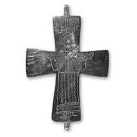
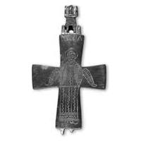

Catalog › CE-0445 · SYR2012-22
Encolpion bivalv de aliaj de cupru, cat. 22, NMIU Kiev
sec. XI–XII (1001–1200) · loc necunoscut · Muzeul Național de Istorie a Ucrainei (НМИУ), Kiev; colecția „siriană” B. I. și V. N. Hanenko, inv. valva anterioară: в 4626/328 (4245); valva posterioară: в 4626/297 (4759)
double-sided reliquary cross (enkolpion), altul; c. XI–XII (1001–1200); find spot unknown; kept at Muzeul Național de Istorie a Ucrainei (НМИУ), Kiev; colecția „siriană” B. I. și V. N. Hanenko.




Identificare
- Categorie
- Encolpion bivalv (relicvar)
- Material
- Altul
- Tehnică
- Gravare (incizie)
- Dimensiuni
- Î 84 × L 66 × Gr 6 mm
Iconografie
- Descriere avers
- Sfântul mucenic Nichita în picioare, rugându-se, cu nimb neted, în veșmânt lung până la glezne, ornamentat în întregime, cu excepția mânecilor, cu rânduri de linii drepte și ondulate și rețea oblică; din veșmânt se văd tălpile îndreptate în lături.
- Revers
- Sf. Arhanghel Mihail
- Descriere revers
- Sfântul arhanghel Mihail, redat în aceeași manieră ca Sf. Nichita de pe valva anterioară.
- Inscripții
- Față: OAГHOCN / HKHTAC; revers: MIXAIΛ
- Limba
- Greacă
Datare și atribuire
- Datare
- sec. XI–XII (1001–1200)
- Centru
- Balcani
- Tipologie
- cruce-relicvar cu oglavie nervurată turnată într-un singur corp
Descoperire
- Context
- Colecție (fără context)
- Coordonate
- 50.4536° N, 30.5164° E
- Precizia locului
- Loc de păstrare (loc de descoperire incert)
Păstrare și referințe
- Colecție
- Muzeul Național de Istorie a Ucrainei (НМИУ), Kiev; colecția „siriană” B. I. și V. N. Hanenko
- Nr. inventar
- valva anterioară: в 4626/328 (4245); valva posterioară: в 4626/297 (4759)
- Bibliografie
- A. A. Пескова, Л. В. Строкова, Христианские древности Византии в «Сирийской коллекции» Б. И. и В. Н. Ханенко, Sankt-Petersburg–Kiev, 2012, 225 p. [Peskova, Strokova 2012], p. 100, cat. nr. 22, ilustrația (fotografie și desen) de la p. 100.
- Figura
- ilustrația la cat. nr. 22
- Planșe
- Peskova, Strokova 2012, p. 100
- Observații
- Cruce-relicvar cu brațe drepte ușor evazate; oglavie nervurată pe bază trapezoidală; înălțime cu oglavie 12,0 cm. Valve masive, adânci; pe exteriorul valvei anterioare cavități mari; pe ambele valve pete roșu-purpuriu; pe valva posterioară o ureche de jos ruptă și pierdere de metal pe rebord. Cea mai apropiată analogie: o valvă anterioară de la Silistra, aflată întâmplător pe malul Dunării, și o valvă posterioară cu arhanghelul Mihail din mormântul 122 de lângă biserica Sf. Pantelimon din Niš (sec. XI–XII). Dimensiuni în sursă (în paranteză, înălțimea cu urechile): 8,35 (10,1)×6,6 cm; 8,3 (9,9)×6,5 cm; înălțime cu oglavie 12,0 cm; grosime 0,5–0,6 cm; 0,5–0,6 cm. Vechiul număr de inventar al Muzeului de Artă Hanenko (1925) este cel din paranteză. Album Hanenko, vol. III (needitat): valva anterioară tabla XLVII, nr. 478; valva posterioară tabla XLIV, nr. 451. Atribuirea autoarelor: regiunea balcano-dunăreană, sec. XI–XII. Locul descoperirii nu este dat în sursă. Material în sursă: aliaj de cupru. Locul descoperirii nu e cunoscut cu precizie; punctul de pe hartă marchează locul de păstrare (Muzeul Național de Istorie a Ucrainei), nu locul descoperirii. Coordonate: nu sunt date în sursă.
Citare: Corpus Encolpiorum, CE-0445, Encolpion bivalv de aliaj de cupru, cat. 22, NMIU Kiev, https://vitaliejosanu1979-ux.github.io/primul-meu-proiect/piese/SYR2012-22/ (accesat 2026-10-17).